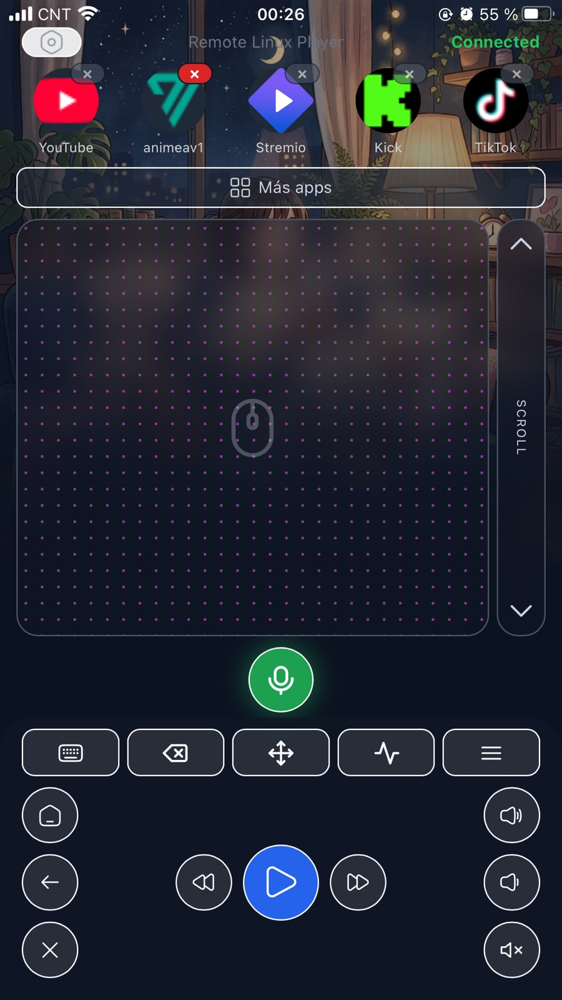
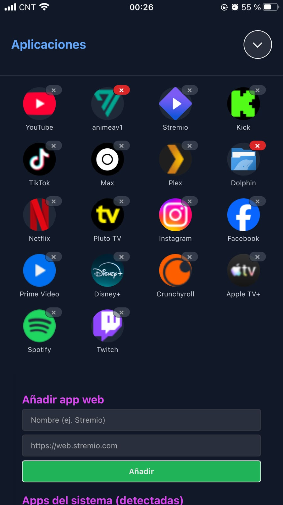
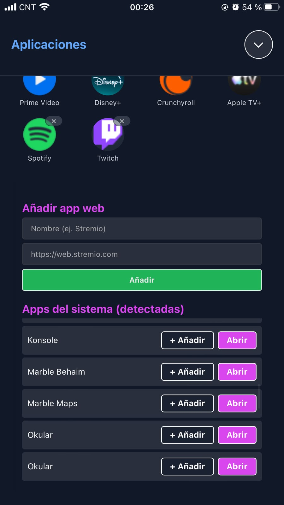

Touchpad, keyboard and your streaming apps one tap away. And with voice, putting on YouTube is just saying "play YouTube" — so the whole family can use the TV, not only the person who set it up.
Runs on your local network · no accounts, no tracking · the basic remote is free

No app stores, no accounts to create, no ports opened to the internet.
Paste the install command in a terminal and the wizard sets up the service, local HTTPS and hardware permissions by itself. The tutorial explains every question.
The installer shows you a secure link. Open it on your phone, accept the local certificate once, and add the app to your home screen.
Netflix, YouTube, Spotify and your native Linux apps. Touchpad, keyboard, volume and playback. With Pro, also by voice.
The hard part of an HTPC isn't building it — it's that afterwards nobody else in the house knows how to use it. LinuxRemotePlayer fixes that with a remote everyone already knows: their own phone.

Under the simple surface there's full control of the system, built for the person who runs the machine.

We'd rather tell you exactly where it works than promise "any Linux".
Tried it on another distro? Tell us how it went from the feedback button in the app — that's how this table grows.
On your Linux PC (Debian/Ubuntu family, with systemd and Firefox):
A single command: it downloads the latest
version, verifies its integrity (sha256) and launches the wizard. The wizard asks 4 questions
(user, TV or desktop mode, sleep, keyboard) and ends by giving you the pairing link for your
phone.
Full step-by-step tutorial →
No subscriptions. No confusing tiers. The basic remote is free forever; the Pro license is a one-time payment that unlocks everything premium, present and future.
Payment will be processed by Paddle, our authorized reseller. No-questions-asked refund within 14 days.
In active development: every update improves voice control and adds more compatible sites. Buy once, and the app keeps growing with you.
LinuxRemotePlayer is built by a single developer. If the app solved your living room and you want to push development forward (multi-distro, more voice commands, gamepad mode), a tip helps enormously.
☕ Buy me a coffee — very soonLRP-XXXX-XXXX-XXXX)
arrives by email within 1-2 minutes. In the app: Settings → License → paste the key →
Activate. The license works on one PC at a time and you can
move it yourself if you switch machines.sudo apt remove linuxremoteplayer. It takes
the service, the firewall rules and the permissions it configured with it. No hidden
leftovers. Details here.